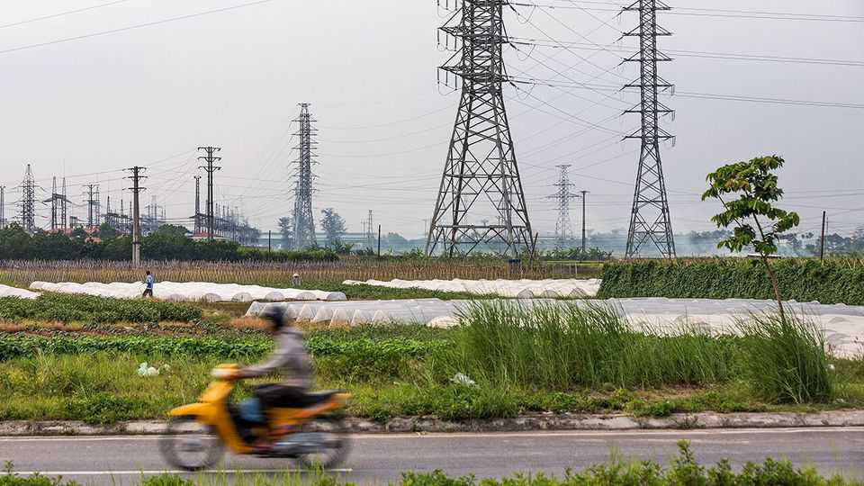

Vietnam's high-tech dreams come with an electricity problem
It needs more LNG-generated power, but isn’t ready to pay for it

Oct 1st 2026
TO MANY PEOPLE Vietnam’s promotion in July to “upper middle-income” status by the World Bank vindicated almost 40 years of doi moi or “renovation,” the country’s period of economic opening. To Lam, the chairman of Vietnam’s Communist Party, is not satisfied: “If we continue with old methods, we may achieve temporary growth,” he warned in May, “but it will be difficult to create sustainable growth …or escape the middle-income trap.”
Wages for Vietnamese workers are rising, which threatens to squeeze already narrow margins in the manufacturing sector. So before its workforce is priced out, Vietnam’s government hopes to leap up the value chain. It intends to manufacture high-tech products like semiconductors, which it currently merely assembles with comparatively little value added. But chipmaking takes lots of energy. And Vietnam, which has only recently conquered chronic blackouts, needs reforms to match its ambition. Luckily, it has a plan. Vietnam aims to bring liquefied natural gas, or LNG, into the power mix. Imported gas can provide an efficient, steady stream of power and is ideal for energy-intensive industrial parks. By 2030, Vietnam hopes to generate about 10% of its electricity from the stuff.
But it won’t meet that goal. VinGroup, the country’s largest conglomerate, ended a $6.7bn LNG power-plant project in March, citing high costs. The construction of new LNG power plants is stalling across the country, and the handful that are moving forward are mostly run by state-owned enterprises, including Vietnam Electricity (EVN). So far, LNG contributes only about 1.6% of Vietnam’s electricity.
Vietnam is not entirely to blame. The Iran war has hit Asia-bound LNG hard; import prices have risen by 146% since the end of February. At current prices, importing LNG at the rates envisioned by the 2030 plan would cost “$14bn–18bn a year—equivalent to 16–20% of the country’s foreign-exchange reserves, every year,” says Phillip Solomon of BRG, a consultancy. But this pressure will fade if and when global prices recede.
The bigger problem is political. Electricity in Vietnam is highly subsidised. State-owned producers are told by the government to sell their power at an artificially low cost, which makes it easier to enforce aggressive price caps. LNG does not work that way. Building a large fleet of LNG power plants takes huge amounts of capital and expertise that are beyond the state’s ability to provide. Only foreign operators can do the trick, and they typically will demand higher rates than the government prefers to pay. This puts Vietnam in a bind. It can either pay for LNG, which makes power subsidies more expensive to maintain, or abandon gas imports, jeopardising its high-tech hopes.
Vietnam has struggled with this choice before. Back in 2017 it was able to attract foreign companies for solar projects with a generous feed-in-tariff, a baseline rate that the state pays for power. But these rates were too expensive to maintain, so EVN retroactively cut them in 2025, slashing returns for investments totalling about $13bn. As a result, many foreign power developers already think twice before doing business in Vietnam. ■
For exclusive coverage of Asian politics, economics and security, sign up to Asia Bulletin, our weekly subscriber-only newsletter.